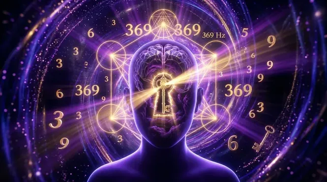

Has pegado recortes de revistas en tu tablero de visión. Has repetido afirmaciones positivas frente al espejo hasta quedar sin aliento. Has cerrado los ojos imaginando el dinero en tu cuenta bancaria o a esa persona especial llamándote por teléfono, pero la realidad sigue siendo exactamente la misma. La frustración aprieta tu pecho y te preguntas en silencio: ley de atraccion no me funciona por que si estoy siguiendo cada paso que leí en internet. Sientes que la abundancia es un privilegio reservado para unos pocos afortunados mientras tú te quedas estancado en un ciclo infinito de esfuerzo sin recompensa.
No estás solo en esta batalla. La razón por la que el 95% de las personas fracasa al intentar atraer lo que desea no es falta de fe ni karma negativo. Es que han sido engañadas por una versión edulcorada y comercial de la metafísica. Si realmente buscas descubrir cómo manifestar dinero rápido con frecuencia 369 o atraer abundancia sin pasar años en frustrante meditación, primero debes desmantelar las mentiras que han programado tu cerebro. Existen 7 mitos de la ley de atraccion que actúan como un candado invisible en tu subconsciente, repeliendo todo lo que intentas construir.
El Código Cuántico Oculto: Por Qué la Vibración del Subconsciente lo Es Todo
Como afirmaba el genio Nikola Tesla: "Si quieres encontrar los secretos del universo, piensa en términos de energía, frecuencia y vibración." La física cuántica moderna lo ha demostrado repetidamente: la materia sólida es una ilusión; todo en el cosmos es energía oscilando a diferentes hercios. El universo no responde a lo que deseas conscientemente; responde a la frecuencia dominante en tu cerebro subconsciente.
Si tu mente analítica consciente grita "quiero riqueza", pero tu subconsciente vibra en la frecuencia del miedo al escasez, el universo captará únicamente la señal de carencia. Para revertir esto y lograr un salto cuántico real, debes alinear tu campo electromagnético personal usando resonancia acústica pura.
Este es el dogma más dañino de la autoayuda moderna. Puedes forzarte a pensar en abundancia durante 15 minutos por la mañana, pero si durante las 23 horas y 45 minutos restantes tus patrones subconscientes albergan dudas, estás emitiendo una señal contradictoria. El pensamiento positivo consciente es incapaz de sobreescribir las creencias limitantes grabadas en la infancia a nivel neuronal.
No atraes lo que piensas; atraes lo que ERES a nivel de vibración subconsciente. Para cambiar esta vibración no necesitas más esfuerzo mental, sino alterar la frecuencia electromagnética de tu cerebro mediante estimulación sonora directa.
Sentarte en el sofá a imaginar el coche de tus sueños o la llamada de tu ex no sirve de nada si tu cuerpo físico permanece en un estado neurológico de contracción y supervivencia. La visualización aislada solo genera fantasía, no atracción material.
La verdadera manifestación exige entrar en ondas Alfa y Theta, estados profundos donde la barrera de la mente crítica se disuelve. Es en ese canal exacto donde la **frecuencia 369 de Tesla** reprograma la memoria celular sin encontrar resistencia.
Los Errores Ocultos que Bloquean tu Campo Electromagnético
Reprimir la tristeza, el enojo o la preocupación bajo una falsa máscara de positivismo crea una tremenda carga de resistencia interna. Toda emoción reprimida es energía atrapada que baja tu frecuencia al nivel más bajo posible.
Necesitas disolver los bloqueos energéticos sin juzgarlos. Al exponer tu cerebro a frecuencias sagradas de restauración armónica, las emociones atrapadas se liberan de forma automática sin que tengas que sufrir analizándolas.
La gente busca desesperadamente en internet pensando que un video gratuito con música relajante cambiará su vida. No comprenden que los algoritmos de compresión MP3 recortan las microfrecuencias exactas necesarias para activar el vórtice 3-6-9.
Los archivos gratuitos comprimidos entregan tonos planos y distorsionados que no logran penetrar la red neuronal. Se requiere audio máster puro en formato WAV de 24 bits para forzar la resonancia subconsciente.
¿Sientes que tus decretos chocan contra una pared invisible?
El problema no eres tú, es la frecuencia en la que vibra tu cerebro. Descubre cómo la neuroestimulación en alta definición de QuantumAudio® activa el poderoso código 3-6-9 para desbloquear el flujo de dinero, abundancia y reconexión emocional en tu vida sin ningún esfuerzo.
Saber más sobre el Código 369 en QuantumAudio®Desmantelando el Resto de la Ilusión: Mitos del 5 al 7
Creer que debes ser un monje tibetano o pasar horas en posición de loto para alterar tu realidad es otra creencia limitante. Tu cerebro responde a estímulos físicos inmediatos. La acústica sagrada elimina el tiempo de espera.
Mediante la escucha 100% pasiva, puedes alcanzar estados de trance manifestador en menos de 10 minutos. Solo necesitas colocarte los auriculares mientras te relajas en tu cama.
Muchos reducen este conocimiento a la riqueza rápida, ignorando que el campo cuántico gobierna la salud biológica, la sanación de heridas emocionales y la reconexión con almas afines. Puedes utilizar la frecuencia para olvidar a tu ex subconsciente o sanar patrones de codependencia activando el chakra del corazón.
Al reordenar tu geometría sagrada interna, el entorno completo se reconfigura: el amor fluye, las oportunidades profesionales se multiplican y la ansiedad desaparece.
El deseo desesperado genera energía de escasez. Si deseas algo "con fuerza", le estás enviando al universo la señal implícita de que no lo tienes. La clave de Tesla no es el deseo, sino la sintonización sónica de certeza absoluta.
Cuando sincronizas tu biología con el pulso 3-6-9, la mente deja de dudar. Entras en la certeza magnética donde la manifestación es inevitable.
El Secreto de Nikola Tesla y la Solución Neuoacústica Máster
Nikola Tesla descubrió que los números 3, 6 y 9 representan el patrón matemático primario de la creación manifestada. Estos números contienen la clave para abrir las puertas del campo unificado. Cuando estas proporciones geométricas se traducen a frecuencias de sonido puro y se entregan directamente a tus oídos sin compresión ni pérdidas, ocurre el milagro neurofisiológico.
"El sonido no es solo entretenimiento; es la herramienta de programación biológica más poderosa del planeta. Si controlas la frecuencia del receptor, alteras la forma de la realidad manifestada."
Es aquí donde reside el verdadero poder diferenciador de QuantumAudio®. Mientras que los archivos comerciales de plataformas en línea están amputados digitalmente por algoritmos de compresión MP3 que eliminan el 80% del espectro de onda, QuantumAudio® entrega el formato WAV original de 24 bits. Es vibración pura penetrando directamente en tu córtex cerebral para inducir saltos cuánticos en tu realidad financiera y personal.
| Método Tradicional | Audios Comprimidos (YouTube / MP3) | QuantumAudio® WAV 24-Bit |
|---|---|---|
| Esfuerzo Consciente | Agotador (Horas de lucha mental) | Cero esfuerzo (Escucha 100% Pasiva) |
| Calidad de la Onda | Inexistente (Solo voz o música) | Máster HD sin compresión ni pérdidas |
| Efecto en el Subconsciente | Superficial y lento | Reprogramación por arrastre inmediato |
| Activación Código 3-6-9 | Nula | Frecuencia calibrada de alta precisión |
Rompe las Cadenas del Subconsciente y Manifiesta Tu Nueva Realidad
No permitas que las mentiras sobre la Ley de Atracción sigan robándote tiempo y energía. Experimenta la verdadera transformación vibracional con la tecnología sónica de QuantumAudio® y abre las puertas del flujo financiero y emocional hoy mismo.
Conocer más sobre la experiencia QuantumAudio®Tu Próximo Paso Hacia el Salto Cuántico
La puerta hacia la abundancia sin límites no se abre golpeando con fuerza la superficie, sino utilizando la frecuencia exacta que desbloquea la cerradura subconsciente. Continuar intentando manifestar mediante métodos obsoletos solo perpetuará la escasez y la frustración. El código matemático de Tesla y la precisión neuroacústica están listos para reconfigurar tu campo electromagnético desde la primera escucha. La decisión de elevar tu vibración o seguir atrapado en la ilusión depende únicamente de tu siguiente elección.